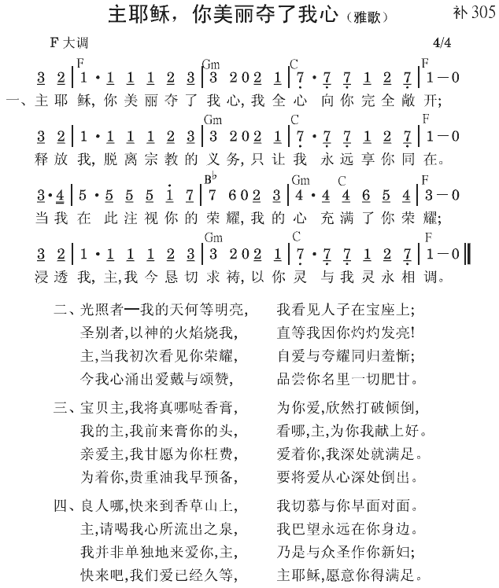

约壹2:15 不要爱世界，和世界上的事。人若爱世界，爱父的心就不在他里面了；
约壹2:16 因为凡世界上的事，就是肉体的情欲、眼目的情欲、并今生的骄傲，都不是出于父，乃是出于世界。
世界─撒但设立的系统，以霸占神所造的人
“世界”在原文里的意义不只一种。在约翰一章二十九节，三章十六节，罗马五章十二节，指堕落的人类被撒但所败坏、霸占，成为他邪恶世界系统的组成分子。在约壹二章十五节，与在约翰十五章十九节，十七章十四节，雅各书四章四节一样，乃指一种秩序、一种固定的形式、一种有秩序的安排，因此是指神的对头撒但所设立一种有秩序的系统，而不是指地。神造人在地上生活，是为着完成祂的定旨。但神的仇敌撒但为了霸占神所造的人，就借着人堕落的性情，在情欲、宴乐、追求，甚至对食衣住行等生活所需的放纵上，用宗教、文化、教育、工业、商业、娱乐等将人系统起来，在地上形成一个反对神的世界系统。这个属撒但的系统整个卧在那恶者里面（约壹五19）。不爱这样的世界，乃是胜过那恶者的立场。稍微爱这样的世界，就给那恶者立场击败并霸占我们。
肉体的情欲
约壹二章十六节说到世界上的事，就是“肉体的情欲、眼目的情欲、并今生的骄傲，都不是出于父，乃是出于世界”。肉体的情欲，就是身体的欲望，主要的与身体有关。因为善恶知识树的果子已经进到人类里面，我们的身体就堕落并败坏了。我们的始祖亚当和夏娃吃了善恶知识树的果子；结果，邪恶的元素进到人类里面，现今这元素就在我们物质的身体里。我们从经历知道，有一种邪恶、属撒但的元素，住在我们人的性情里面。
眼目的情欲
眼目的情欲是魂借着眼目而有的欲望。当善恶知识树的果子进到人的身体里，身体就成了肉体。因为身体包围着魂，魂就落到堕落身体的影响之下。结果，我们的魂也败坏了。所以，魂─我们心理的人，由于堕落身体的影响，就成为满了情欲的。
今生的骄傲
今生的骄傲就是今生虚空的骄傲、夸耀、虚荣、和物质的炫耀（《约翰一书生命读经》二〇七、二一〇至二一二页）。
只有爱神才能叫我们脱离世界
许多少年人，舍不得世界。聚会时，被人激励时，好像要不爱世界了；但是，另一时候，好像同世界是不能断缘的。我们必须有一个更好的在里头，爱世界的心才能丢下。有一次，在一个画展里，许多画要远看方好看，其中有一张要近看方能得着其中的意思。这一张画，是指着基督徒的一种寓意画，画着一个小孩子的周围地下，都是些小孩子所喜欢的玩具。但是这个孩子好像一点都不在意，却是两目注视着面前的窗户，两手也向前伸去。远看时，令人莫名其妙，细看时，才知那窗户上有一美丽的小鸽。画上注着说，这个小孩子因要得着那美丽的小鸽，所以把所有的玩具都丢在地上了。从这张图画的故事看来，是因着要得那更好的，所以才把那些次好的摔下。神从来没有叫我们摔掉什么，神乃是把更好的放在我们面前，我们如果要去得的话，就自然会把许多都丢弃了。
有一个少年信徒，同我住了两个月之久，他说他不能丢下世界。他对一年长信徒说，世界的福，你享过了，所以你能牺牲；但是，我不能。这个少年会信神，但是他不会爱神。我们要知道，信神可以拯救你脱离罪恶，爱神才能叫你脱离世界。弟兄姊妹们，我们要让神的爱进入我们里面。神的爱一进入，世界就不知溜到那里去了。
作主耶稣热爱的情人
以弗所六章二十四节说，“愿恩典与一切在不朽坏之中，爱我们主耶稣基督的人同在。”这里说恩典与什么人同在呢？就是与在不朽坏之中爱主的人同在。如果人问你是信主的么？你若答应说我是爱主的，全世界的人都要觉得希奇了。
彼前一章八节说，“你们虽然没有见过祂，却是爱祂；如今虽不得看见，却因信入祂而欢腾，有说不出来、满有荣光的喜乐。”这里是说到因信入祂，所以爱祂。这样因信入祂而有的爱，就生出什么来呢？就生出喜乐来，这喜乐是满有荣光的。
末了，弟兄姊妹们，我要告诉你们：“但愿你们作主耶稣热爱的情人！”（倪柝声文集第一辑第十八册，一三四至一三五、一四二页。）
参读：《约翰一书生命读经》第二十篇；倪柝声文集第一辑第十八册，爱神；《不要爱世界》第一、七章。
